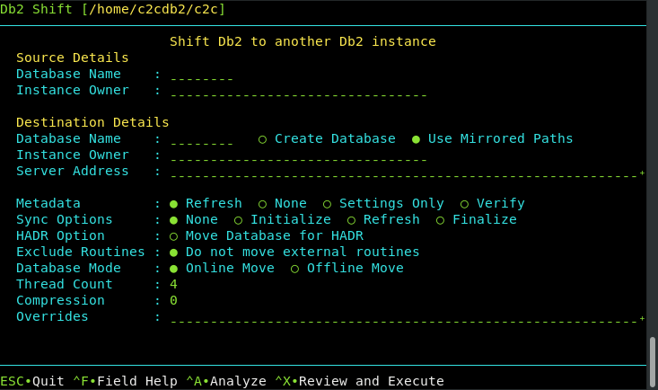

UI - Shift a Db2 database to another Db2 instance

This format of the Db2 Shift will take an existing Db2 database on an on-premise system, and shift it to another traditional Db2 system hosted on another on-premise server or cloud virtual machine. This does not containerize Db2! The Db2 Shift command requires the following information:
- Source Database details
- Destination location
- Shift Options
The db2shift program assumes that you are currently connected to the instance that has the Db2 database and have ssh connectivity to the target server.
Source Database

The source database is the name of the database that you want to move to the new location. Note that you can have the same or different database name at the target. If you provide a different database name at the target, the program will copy the database from the source and place it on the target and use the existing name.
Source or Instance Owner

The Db2 Shift program makes the assumption that the current userid you are logged into is the owner of the instance. This is necessary due to the requirement to access the underlying files that are used by Db2. If you supply the source owner value, Db2 Shift will double check that you are working in the correct instance and the settings files are consistent.
Destination Database
The destination database name can be the same as the source database, or a completely different name. Make sure that if you are creating a database with a different name that it doesn't currently exist on your target system. Otherwise, the target database will be deleted!
Destination Owner
The destination owner value is used for generating the connection address and also used when settings up HADR between a primary and secondary instance.
Destination Server (Instance)

For destinations that are traditional Db2 instances, you must provide the userid and the IP address or symbolic name of the destination server. You only use an IP address for shifting into a traditional Db2 instance.
When connecting to a remote instance, the Db2 Shift program expects that a passwordless ssh environment has been established between the source and target servers.
Stored Procedures and Functions

By default, the Db2 Shift command will automatically move all external stored procedures and functions
that are found in the $HOME/sqllib/function path to the new destination. All SQLPL and PL/SQL routines
are moved as part of the database move, so there is no migration required for those routines.
HADR Setup

When HADR option is selected, the database will be copied over to the target location and initialized as an HADR secondary. The database can now be connected with the primary database as an HADR pair and participate in failover or readonly applications.
This option cannot be used if your database needs to be migrated or if the database needs to be renamed.
Metadata Generation

The Db2 Shift command generates metadata that is used during the shift process. This metadata is key to determining which objects need to be moved from a source to destination as well as validating that the source can be successfully moved.
Generating metadata requires access to the source and destination systems. If for some reason the connection to the source or destination is unavailable, the existing metadata files can still be used. In most cases you will not need to adjust these settings unless you have encountered a shift error.
Refresh
The Refresh option determines whether or not the existing metadata is refreshed. The default is value
for the Meta Data field is Refresh. The Refresh option will
delete any existing metadata files and recreate them on your system during the shift operation.
If you are importing settings files from other systems, or if you need to rerun the shift process without regenerating the files, use the None option. When Db2 Shift executes it will use the existing metadata in the working directory and
attempt to use those settings.

One scenario that involves the use of None occurs when a shift operation fails at the target OC/Kubernetes pod
because of a communication error. The database at the destination will be left in an inconsistent state and must be rebuilt
by the shift process. The settings for the destination database can no longer be retrieved because the database cannot be
started. Because of this reason, you must use the existing destination settings that were generated when you first ran the
Db2 Shift command.
Generate Settings

The Settings Only option will generate the meta files but will prevent Db2 Shift from continuing execution after the metadata files have been created.
Verification

The Verify option will generate the metadata files and check the connectivity and all settings and then stop
execution. If Verify completes successfully, the Db2 Shift command will be able to execute the shift process.
Synchronization Options

The Db2 Shift program has two methods of moving the database to the destination. The traditional method is to take one pass at the database and move everything at once. During the finishing process, the program will briefly suspend the database (depending on settings) and perform a final refresh. This last step will pick up any database objects that may have changed over the course of the move.
The total amount of time the database is suspended is directly related to how much information has changed during the shift process. In the event that you have large amount of changes, the final refresh may too long an outage. To minimize this outage, you can use the synchronization options provided.
The default setting is do a complete shift operation without intermediate sync operations.
To initialize the synchronization option, select Initialize from the option list.

This initial step will instruct Db2 Shift to copy all of the required database objects to the target system. Once the copies are complete, the program will end processing and leave the target system in an incomplete state. During this process the source database is operational and it will not be suspended.
When there is an appropriate moment, the database movement can
be finalized with the Finalize option.

The Finalize option will do one final pass against the source
database and then it will finalize the database movement on the
destination site. During the last pass the finish process will
suspend the database to get a consistent database environment.
Once this step completes, the destination database will be
available.
In the event that the source system has high update volumes, there
may be a need to do multiple sync operations to minimize the
finalize step. The Db2 Shift command will need to be told
that it is syncing the database again, but not to start from
scratch. The control files generated by the Initialize option
will allow Db2 Shift to move database objects that are new
or have changed since the initial synchronization request. The
command to do the sync and only refresh the database objects
requires the use of the Refresh option.

The Refresh option indicates to the Db2 Shift program to
start syncing process to look for delta changes only.
The Refresh process can be run repeatedly until
the amount of changes between runs is minimized. When an appropriate
timeslot is available, the shift can be finalized by using the
Finalize option.
The Finalize option will perform the final pass against the source
database and complete the shift process as before.
In summary, the standard shift operation will complete in one step (None
option is used). The Initialize option allows you
to gradually move a database over time. For a gradual
database shift, use the Initialize option on the first run. This will move
an initial set of database files to the target. Then use the Refresh option
on subsequent runs to copy any files that may have been added or changed to
the database. When you are ready to finalize the shift, use the Finalize
option to gather any remaining files and complete the shift operation on
the target system.
Online or Offline Move
By default, the Db2 Shift command will suspend the database while it completes the last scan of the files. During this
period of time, the database will not complete any insert, update, or delete transactions. This will result in a consistent
database at the destination, but some transactions will not have been committed to the database. If the database
at the destination must be identical to the source database, then you must choose the Offline Move option which
will shut down the database so there will not be any transactions outstanding when the shift is completed.
Note: The period of time that the database is suspended or stopped is dependent on the changes that have occurred in the database from the time the shift operation started to the time when copying of the data is complete. The changes that have occurred during this period of time needs to be captured during the final step. It is during this step that the database must be suspended or stopped. During the initial scan the database will remain completely online and will not be impacted by the shift utility from a transaction perspective. However, since there is a large amount of disk reads taking place, it may impact bufferpool read performance.
The Offline Move mode must be used when shifting a database that requires a migration from an older release of
Db2. This option must be specified when shifting Db2 versions 10.5 or 11.1.
Performance: Threading

The copy phase of the Db2 Shift program is able to use multiple threads to transmit data to a destination. This settings allows you to increase the parallelism up to 8 threads. As you increase the number of threads, the amount of data being transmitted increases, at the expense of greater CPU usage and network congestion. The default value is 4 which strikes a balance between overhead and network performance.
Performance: Compression

RSYNC compresses the data during the transfer process to allow for faster movement of data. The amount of compression can be adjusted from 0 to 9 with 0 turning off compression and values between 1 and 9 increasing the amount of compression applied to the data. Higher compression values will result in more CPU usage and may not significantly reduce the size of the datastream.
A value of 4 has been found to be a good compromise between compression overhead and data size. For slow networks, a higher value may reduce transmission times at the expense of increased CPU overhead.